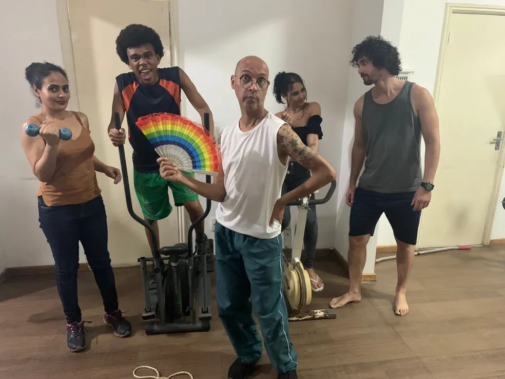

Comédia Teatral estreia nesta sexta em BH com crítica social as academias
Encontrar na plateia um espectador que se identifique com as situações nada inusitadas encenadas pelos atores e que foram trazidas pelo roteiro de “Jojo, três de dez para começar”. Essa é a expectativa do autor Demer Gabriel, psicólogo, que buscou inspiração na própria experiência para retratar a atmosfera de uma academia, em Belo Horizonte. A peça estreia nesta sexta-feira (16), no Teatro da Biblioteca Pública, na Savassi, Região Centro-Sul da capital.
“Do magro que quer ficar forte ao personal que vive na academia, e até quem não tem costume de treinar, mas acha que malhar vai recuperar algum relacionamento, a autoestima. Tudo isso vai estar na peça. A gente tenta mostrar que a academia não pode ser o único meio, [a pessoa] tem que estar feliz”, explicou Demer.
O texto passa pela história de Jojo, o faxineiro de uma academia, que vai interagir com os frequentadores do local. É por meio dessa conversa que o público vai descobrir as histórias de cada personagem, quebrar tabus, dentre diversas revelações dos bastidores envolvendo esse tipo de estabelecimento.